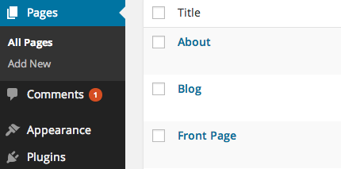
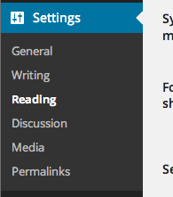
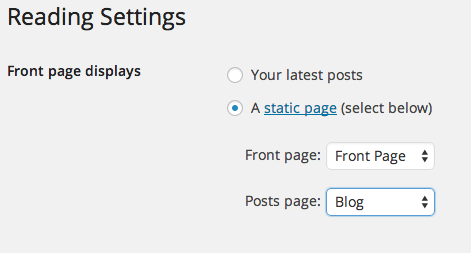
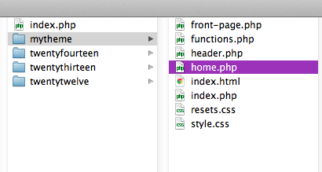

Today we’re going to go over the WordPress Loop, which is used to populate most of the content on our pages and posts, and creating a front page for the portfolio sites.
We’ve looked at the loop in class already, but we’re going to talk about it in more detail.
Here’s the WordPress explanation.
The WordPress loop iterates through available content and makes it available to the template code. This makes it easy to customize the content we create in the WordPress CMS to fit our theme and design.
<?php if ( have_posts() ) : while ( have_posts() ) : the_post(); ?>
//your posts content
<?php endwhile; else: ?>
<p><?php _e('Sorry, no posts match your criteria.'); ?></p>
<?php endif; ?>The loop is a series of functions that determine whether there are any blog posts to display, and then uses different functions to get the content of those posts and display them, looping, or reusing the HTML tags that are created in the php page to structure that content.
Template tags can be used only within the WordPress loop. A few tags that may be useful on our blogs:
<?php the_excerpt(); ?>
<?php the_content(); ?>Most of the tags are self explanatory. The excerpt is a short line or description of the post. If there is no excerpt, WP fills in some text from the beginning of your post.
the_content() is the content of the post/page, so any text, images or other media that are part of the body of an entry.
The content will typically go into a div or article.
Each post has an ID and a set of classes which can be referenced and used in HTML attributes:
<?php the_ID(); ?>
<?php post_class(); ?>
<article id="<?php the_ID(); ?>" <?php post_class(); ?> >the_author_posts_link() adds a link to all posts by the author. Your site will most likely have one author, but this will be useful for future projects or as an option on your theme.
Posted by <span class="author">?php the_author_posts_link(); ?></span>Tags are a great way to organize content. WP helps style the tag with arguments to determine how they are separated with HTML and text.
<?php the_tags(); ?>
<?php the_tags( $before, $sep, $after ); ?>
<?php the_tags( 'Tags: ', ", ", '<br>' ); ?>
<?php the_tags( 'Tagged with: ', '•', '<br>'); ?>Categories can also take an argument for how the are separated.
<?php the_category(); ?>
<?php the_category(', '); ?>
<?php the_category('•'); ?>the_thumbnail() will show the featured image tagged in the post/page.
<?php the_post_thumbnail(); ?>Thumbnails require an added line in functions.php:
add_theme_support( 'post-thumbnails' );Links to next/last post. Third argument is set TRUE to only let posts with same category, FALSE for another post/page to come up.
<?php previous_post_link('%link', '%title', TRUE); ?>
<?php next_post_link('%link', '%title', TRUE); ?>Okay, now that we have some new WP toys to play with, let’s build a front page.
Most of your portfolio designs require a homepage, either with a large image, some information or other design elements. Currently our sites all open up to blog posts. We can use front-page.php to create a separate page to appear at the index of the site.
Let’s look quickly at the WP template hierarchy to understand how WP decides what page to load at the root of the site.
First, using the Dashboard, create a page called Front Page and a Page called Blog. Front Page will be the splash page of the portfolio, and blog will be the new page to display posts. We can leave them blank at first.
Next go to Settings > Reading and set the front page and posts page to Front Page and Blog.
 Now we need to add Features posts to appear on the front page. Add a new Category called Featured. In All Posts, Quick Edit a couple of posts and add “Featured”.
Now for some PHP fun.
Go to your local WP files and duplicated index.php twice. Name one front-page.php and the other home.php.
Both files will use the loop to display different content.
For the front-page.php we’re not going to use the title for the post, just the content.
<div class="front-page"<
<?php if ( have_posts() ) : while ( have_posts() ) : the_post(); ?>
<div class="intro">
<?php the_content(); ?>
</div>
<?php endwhile; else:>
<p>Sorry, no posts match your criteria.</p>
<?php endif; ?>
</div>To limit it so that only Featured posts appear on the front page, so I’m going to make a custom query using WP_Query(). I’m going to create an argument for the query as a variable and save the result in another variable:
<?php
$args = array('category_name' => 'Featured');
$featured = new WP_Query($args);
?>and feed that variable into my content loop:
<?php if ( have_posts() ) : while ( $featured->have_posts() ) : $featured->the_post(); ?>I also need to add the function wp_reset_postdata() to reset my query for later loops.
<?php endif; wp_reset_postdata(); ?>I skipped comments because they probably won’t be necessary on portfolio sites. If you want to have comments check out this entry: Comments template.
Tags.